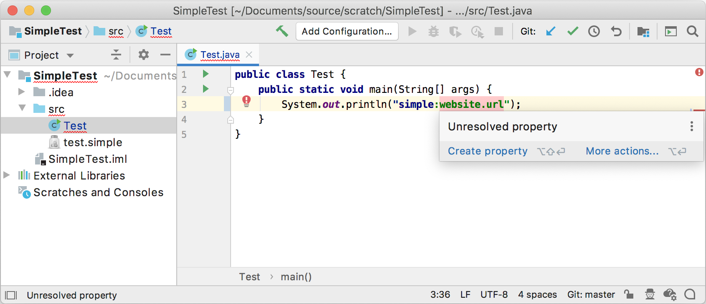
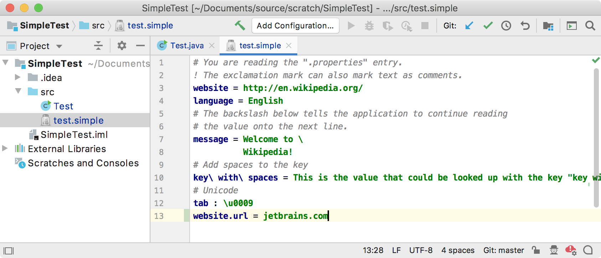

18. Quick Fix
A quick fix for a custom language supports the IntelliJ Platform-based IDE feature Intention Actions. For the Simple Language, this tutorial adds a quick fix that helps to define an unresolved property from its usage.
- 18.1. Update the Element Factory
- 18.2. Define an Intention Action
- 18.3. Update the Annotator
- 18.4. Run the project
18.1. Update the Element Factory
The SimpleElementFactory is updated to include two new methods to support the user choice of creating a new property for the Simple Language quick fix.
The new createCRLF() method supports adding a newline to the end of the test.simple file before adding a new property.
A new overload of createProperty() creates a new key-value pair for Simple Language.
// Copyright 2000-2020 JetBrains s.r.o. and other contributors. Use of this source code is governed by the Apache 2.0 license that can be found in the LICENSE file.
package org.intellij.sdk.language.psi;
import com.intellij.openapi.project.Project;
import com.intellij.psi.*;
import org.intellij.sdk.language.SimpleFileType;
public class SimpleElementFactory {
public static SimpleProperty createProperty(Project project, String name) {
final SimpleFile file = createFile(project, name);
return (SimpleProperty) file.getFirstChild();
}
public static SimpleFile createFile(Project project, String text) {
String name = "dummy.simple";
return (SimpleFile) PsiFileFactory.getInstance( project).createFileFromText(name, SimpleFileType.INSTANCE, text);
}
public static SimpleProperty createProperty(Project project, String name, String value) {
final SimpleFile file = createFile(project, name + " = " + value);
return (SimpleProperty) file.getFirstChild();
}
public static PsiElement createCRLF(Project project) {
final SimpleFile file = createFile(project, "\n");
return file.getFirstChild();
}
}
18.2. Define an Intention Action
The SimpleCreatePropertyQuickFix creates a property in the file chosen by the user - in this case, a Java file containing a prefix:key - and navigate to this property after creation.
Under the hood, SimpleCreatePropertyQuickFix is an Intention Action.
For a more in-depth example of an Intention Action, see conditional_operator_intention.
// Copyright 2000-2020 JetBrains s.r.o. and other contributors. Use of this source code is governed by the Apache 2.0 license that can be found in the LICENSE file.
package org.intellij.sdk.language;
import com.intellij.codeInsight.intention.impl.BaseIntentionAction;
import com.intellij.lang.ASTNode;
import com.intellij.openapi.application.ApplicationManager;
import com.intellij.openapi.command.WriteCommandAction;
import com.intellij.openapi.editor.Editor;
import com.intellij.openapi.fileChooser.FileChooser;
import com.intellij.openapi.fileChooser.FileChooserDescriptor;
import com.intellij.openapi.fileChooser.FileChooserDescriptorFactory;
import com.intellij.openapi.fileEditor.FileEditorManager;
import com.intellij.openapi.project.Project;
import com.intellij.openapi.project.ProjectUtil;
import com.intellij.openapi.vfs.VirtualFile;
import com.intellij.pom.Navigatable;
import com.intellij.psi.PsiFile;
import com.intellij.psi.PsiManager;
import com.intellij.psi.search.FileTypeIndex;
import com.intellij.psi.search.GlobalSearchScope;
import com.intellij.util.IncorrectOperationException;
import org.intellij.sdk.language.psi.SimpleElementFactory;
import org.intellij.sdk.language.psi.SimpleFile;
import org.intellij.sdk.language.psi.SimpleProperty;
import org.jetbrains.annotations.NotNull;
import java.util.Collection;
class SimpleCreatePropertyQuickFix extends BaseIntentionAction {
private String key;
SimpleCreatePropertyQuickFix(String key) {
this.key = key;
}
@NotNull
@Override
public String getText() {
return "Create property";
}
@NotNull
@Override
public String getFamilyName() {
return "Simple properties";
}
@Override
public boolean isAvailable(@NotNull Project project, Editor editor, PsiFile file) {
return true;
}
@Override
public void invoke(@NotNull final Project project, final Editor editor, PsiFile file) throws
IncorrectOperationException {
ApplicationManager.getApplication().invokeLater(new Runnable() {
@Override
public void run() {
Collection<VirtualFile> virtualFiles =
FileTypeIndex.getFiles(SimpleFileType.INSTANCE, GlobalSearchScope.allScope(project) );
if (virtualFiles.size() == 1) {
createProperty(project, virtualFiles.iterator().next());
} else {
final FileChooserDescriptor descriptor =
FileChooserDescriptorFactory.createSingleFileDescriptor(SimpleFileType.INSTANCE);
descriptor.setRoots(ProjectUtil.guessProjectDir(project));
final VirtualFile file = FileChooser.chooseFile(descriptor, project, null);
if (file != null) {
createProperty(project, file);
}
}
}
});
}
private void createProperty(final Project project, final VirtualFile file) {
WriteCommandAction.writeCommandAction(project).run(() -> {
SimpleFile simpleFile = (SimpleFile) PsiManager.getInstance(project).findFile(file);
ASTNode lastChildNode = simpleFile.getNode().getLastChildNode();
// TODO: Add another check for CRLF
if (lastChildNode != null/* && !lastChildNode.getElementType().equals(SimpleTypes.CRLF)*/) {
simpleFile.getNode().addChild(SimpleElementFactory.createCRLF(project).getNode());
}
// IMPORTANT: change spaces to escaped spaces or the new node will only have the first word for the key
SimpleProperty property = SimpleElementFactory.createProperty(project, key.replaceAll(" ", "\\\\ "), "");
simpleFile.getNode().addChild(property.getNode());
((Navigatable) property.getLastChild().getNavigationElement()).navigate(true);
FileEditorManager.getInstance(project).getSelectedTextEditor().getCaretModel().moveCaretRelatively(2, 0, false, false, false);
});
}
}
18.3. Update the Annotator
When a badProperty annotation is created, the badProperty.registerFix() method is called.
This method call registers the SimpleCreatePropertyQuickFix as the Intention Action for the Intellij Platform to use to correct the problem.
// Copyright 2000-2020 JetBrains s.r.o. and other contributors. Use of this source code is governed by the Apache 2.0 license that can be found in the LICENSE file.
package org.intellij.sdk.language;
import com.intellij.lang.annotation.*;
import com.intellij.openapi.project.Project;
import com.intellij.openapi.util.TextRange;
import com.intellij.psi.*;
import org.intellij.sdk.language.psi.SimpleProperty;
import org.jetbrains.annotations.NotNull;
import com.intellij.openapi.editor.DefaultLanguageHighlighterColors;
import java.util.List;
public class SimpleAnnotator implements Annotator {
// Define strings for the Simple language prefix - used for annotations, line markers, etc.
public static final String SIMPLE_PREFIX_STR = "simple";
public static final String SIMPLE_SEPARATOR_STR = ":";
@Override
public void annotate(@NotNull final PsiElement element, @NotNull AnnotationHolder holder) {
// Ensure the Psi Element is an expression
if (!(element instanceof PsiLiteralExpression)) return;
// Ensure the Psi element contains a string that starts with the key and separator
PsiLiteralExpression literalExpression = (PsiLiteralExpression) element;
String value = literalExpression.getValue() instanceof String ? (String) literalExpression.getValue() : null;
if ((value == null) || !value.startsWith(SIMPLE_PREFIX_STR + SIMPLE_SEPARATOR_STR)) return;
// Define the text ranges (start is inclusive, end is exclusive)
// "simple:key"
// 01234567890
TextRange prefixRange = TextRange.from(element.getTextRange().getStartOffset(), SIMPLE_PREFIX_STR.length() + 1);
TextRange separatorRange = TextRange.from(prefixRange.getEndOffset(), SIMPLE_SEPARATOR_STR.length());
TextRange keyRange = new TextRange(separatorRange.getEndOffset(), element.getTextRange().getEndOffset() - 1);
// Get the list of properties from the Project
String possibleProperties = value.substring(SIMPLE_PREFIX_STR.length() + SIMPLE_SEPARATOR_STR.length());
Project project = element.getProject();
List<SimpleProperty> properties = SimpleUtil.findProperties(project, possibleProperties);
// Set the annotations using the text ranges.
Annotation keyAnnotation = holder.createInfoAnnotation(prefixRange, null);
keyAnnotation.setTextAttributes(DefaultLanguageHighlighterColors.KEYWORD);
Annotation separatorAnnotation = holder.createInfoAnnotation(separatorRange, null);
separatorAnnotation.setTextAttributes(SimpleSyntaxHighlighter.SEPARATOR);
if (properties.isEmpty()) {
// No well-formed property found following the key-separator
Annotation badProperty = holder.createErrorAnnotation(keyRange, "Unresolved property");
badProperty.setTextAttributes(SimpleSyntaxHighlighter.BAD_CHARACTER);
// ** Tutorial step 18.3 - Add a quick fix for the string containing possible properties
badProperty.registerFix(new SimpleCreatePropertyQuickFix(possibleProperties));
} else {
// Found at least one property
Annotation annotation = holder.createInfoAnnotation(keyRange, null);
annotation.setTextAttributes(SimpleSyntaxHighlighter.VALUE);
}
}
}
18.4. Run the project
Open the test Java file in an IDE Development Instance running the simple_language_plugin.
To test SimpleCreatePropertyQuickFix, change simple:website to simple:website.url.
The key website.url is highlighted by SimpleAnnotator as an invalid key, as shown below.
Choose “Create Property”.

The IDE opens the test.simple file and adds website.url as a new key.
Add the new value jetbrains.com for the new website.url key.

Now switch back to the Java file; the new key is highlighted as valid.